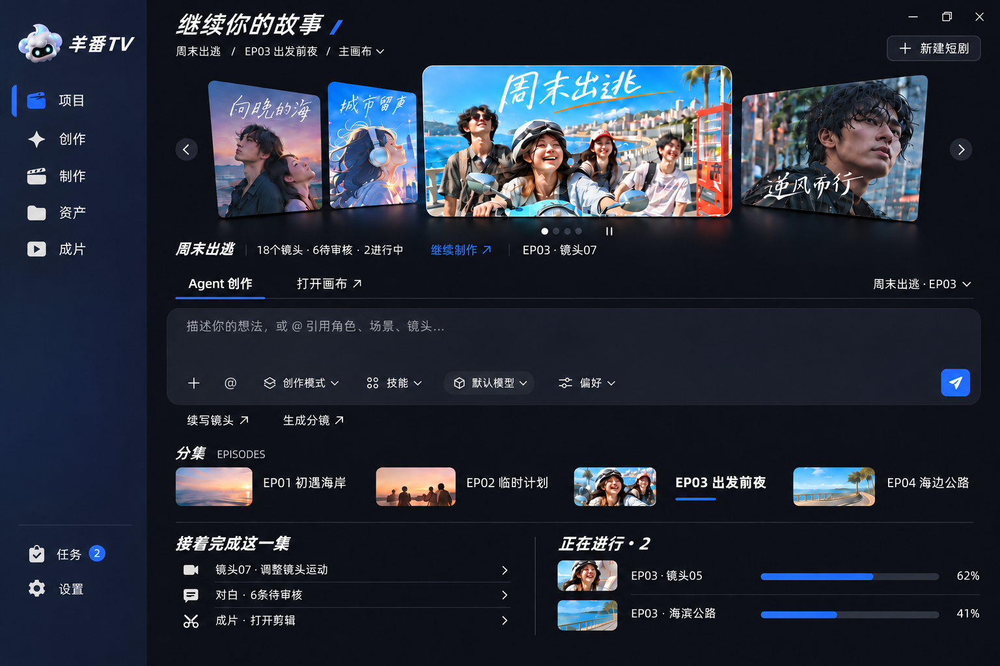
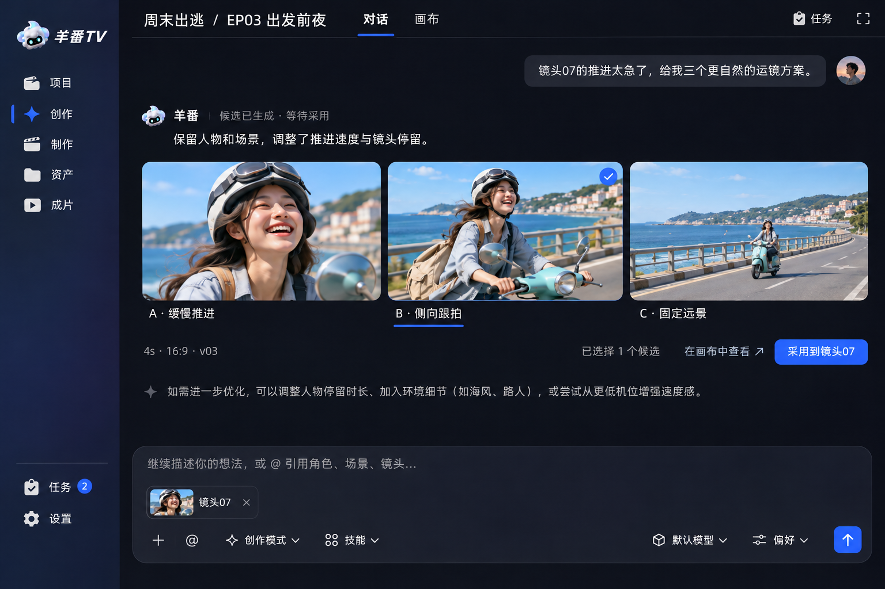
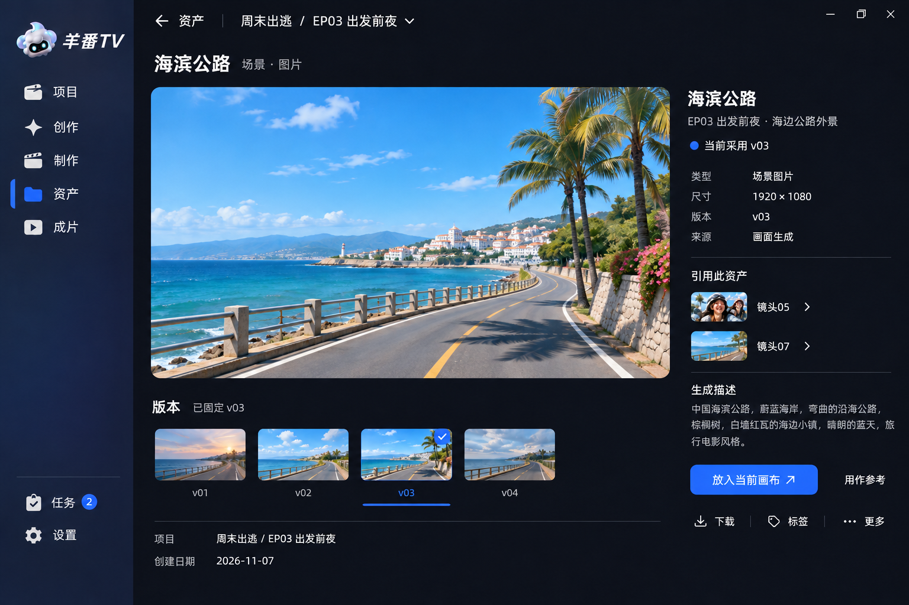
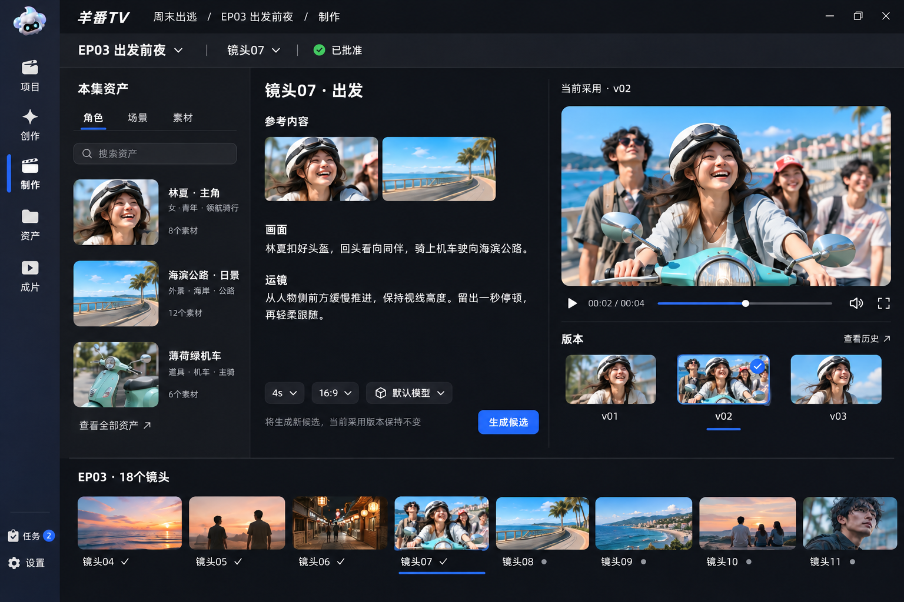

2026-11-07 · 对照即梦、小云雀真实页面生成的四张静态概念图。保留获选首页的品牌与黑蓝基调，调整功能页的层级。
保留获选立体画廊与羊羊品牌，简化 Agent 输入区工具。手动与自动轮播仅展示操作入口，尚未实现。

生成提示词结果直接排在页面上，采用操作统一放在结果栏。

生成提示词大预览为主，引用信息和使用动作在右侧。

生成提示词收窄全局导航，按资产、描述、预览、镜头条分工。

生成提示词制作页的“角色”筛选与混合列表不一致，应改“全部”或联动筛选；画面与运镜需补明确编辑态。三张字号和导航尺寸尚需统一，资产页的重复标题与选中提示可精简。产品源码未修改。